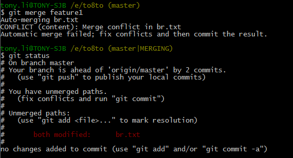
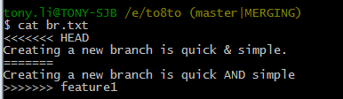
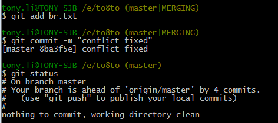
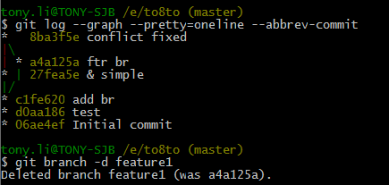

解决冲突
人生不如意之事十之八九，合并分支往往也不是一帆风顺的。
准备新的feature1分支，继续我们的新分支开发：
$ git checkout -b feature1 --创建并切换到feature1分支
在br.txt里添加一段话 Creating a new branch is quick AND simple，并在分支上提交。
切换到master分支
Git还会自动提示我们当前master分支比远程的master分支要超前1个提交。
在master分支上把br.txt文件的内容改为：Creating a new branch is quick & simple.
现在，master分支和feature1分支各自都分别有新的提交，变成了这样：

这种情况下，Git无法执行“快速合并”，只能试图把各自的修改合并起来，但这种合并就可能会有冲突，我们试试看：
果然冲突了！Git告诉我们，br.txt文件存在冲突，必须手动解决冲突后再提交。git status也可以告诉我们冲突的文件
我们可以直接查看br.txt的内容：$ cat br.txt
Git用<<<<<<<，=======，>>>>>>>标记出不同分支的内容，我们修改如下后保存：
Creating a new branch is quick and simple.
然后提交：
$ git add br.txt
$ git commit –m “conflict fixed”
现在，master分支和feature1分支变成了下图所示：

用带参数的git log也可以看到分支的合并情况：
分支的任务完成，删除它。
小结：
当Git无法自动合并分支时，就必须首先解决冲突。解决冲突后，再提交，合并完成。
用git log --graph命令可以看到分支合并图。